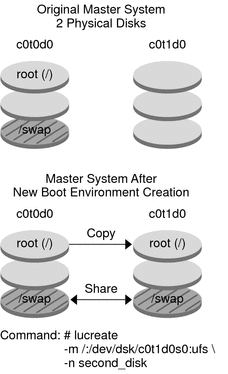

|
|||
|
3. Creating Solaris Flash Archives (Tasks) Task Map: Creating Solaris Flash Archives To Install the Master System for an Initial Installation Creating Customization Scripts To Create a Precreation Script To Create a Predeployment Script To Create a Postdeployment Script Creating a Solaris Flash Archive To Create a Solaris Flash Archive for an Initial Installation To Create a Solaris Flash Differential Archive With an Updated Master Image To Create a Solaris Flash Differential Archive by Using Solaris Live Upgrade 4. Installing and Administering Solaris Flash Archives (Tasks) |
Creating a Solaris Flash ArchiveYou can create an archive with an initial installation that overwrites all the files on the clone system, or you can create a differential archive that only overwrites the changes that are specified. For an overview of a differential archive, see Planning to Create the Solaris Flash Differential Archive for an Update. Caution - A Solaris Flash archive cannot be properly created when a non-global zone is installed. The Solaris Flash feature is not compatible with the Solaris Zones partitioning technology. If you create a Solaris Flash archive, the resulting archive is not installed properly when the archive is deployed under these conditions:
To Create a Solaris Flash Archive for an Initial InstallationAfter you install the master system, create a Solaris Flash archive to use to install other systems.
Creating a Solaris Flash Archive (Examples)File systems can be copied exactly or can be customized by excluding some directories or files. You can achieve the same results by using different options. Use the options that best suit your environment. The file systems in the following examples have been greatly simplified for clarification. Rather than use file system names such as /var, /usr, or /opt, the master system file structure for these examples is the following: /aaa/bbb/ccc/ddd /aaa/bbb/fff /aaa/eee /ggg Caution - Use the flarcreate file-exclusion options with caution. If you exclude some directories, others that you were unaware of might be left in the archive, such as system configuration files. The system would then be inconsistent and the installation would not work. Excluding directories and files is best used with data that can easily be removed without disrupting the system, such as large data files. Creating a Solaris Flash Archive (Various Examples)Example 3-6 Creating an Exact Duplicate ArchiveIn this example, the archive is named archive1. This archive is copied exactly from the master system and then compressed. The archive is an exact duplicate of the master system and is stored in archive1.flar. # flarcreate -n archive1 -c archive1.flar To check the file structure of the archive, type the following. # flar info -l archive1.flarlost+found
export
export/home
export/home/lost+found
var
var/sadm
var/sadm/install
var/sadm/install/admin
var/sadm/install/admin/default
var/sadm/install/logs
var/sadm/install/contents
var/sadm/install/.lockfile
var/sadm/install/.pkg.lock
var/sadm/pkg
var/sadm/pkg/SUNWocfd
var/sadm/pkg/SUNWocfd/install
var/sadm/pkg/SUNWocfd/install/copyright
var/sadm/pkg/SUNWocfd/save
var/sadm/pkg/SUNWocfd/save/pspool
var/sadm/pkg/SUNWocfd/save/pspool/SUNWocfd
.....
.....
usr/bin/sparcv7
usr/bin/sparcv7/savecore
usr/bin/sparcv7/gcore
....
....
usr/lib/diff3prog
usr/lib/madv.so.1
usr/lib/mpss.so.1
usr/lib/cpu
usr/lib/cpu/sparcv8plus
....
....
devices/pseudo/udp6@0:udp6
devices/pseudo/udp@0:udp
devices/pseudo/tcp@0:tcp
devices/pseudo/iwscn@0:iwscn
devices/pseudo/wc@0:wscons
devices/pseudo/tcp6@0:tcp6
devices/pseudo/sctp6@0:sctp6
var/fm/fmd/ckpt
var/fm/fmd/rsrc
kernel/drv/st.conf
kernel/drv/st.conf
kernel/drv/st.conf
kernel/drv/st.conf
#Example 3-7 Creating an Archive With the cpio Copy Method for Backward CompatibilityIn this example, the archive must be a cpio archive because of backward compatibility issues. The default pax copy method is not used, but the -L cpio option is used to create a cpio archive. When you use the -L cpio option, individual files cannot be over 4 Gbytes. The archive is named archive1. This archive is copied exactly from the master system and then compressed. The archive is an exact duplicate of the master system and is stored in archive1.flar. # flarcreate -L cpio -n archive1 -c archive1.flar To check the file structure of the archive, type the following. # flar info -l archive1.flar aaa aaa/bbb aaa/bbb/ccc aaa/bbb/ccc/ddd aaa/bbb/fff aaa/eee aaa/eee gggExample 3-8 Creating an Archive From an Alternate root (/) File System In this example, the archive is named archive4. This archive is copied exactly from the master system and then compressed. The archive is an exact duplicate of the master system and is stored in archive4.flar. The -R option is used to create the archive from another directory tree. # flarcreate -n archive4 -c -R /x/yy/zz archive4.flarExample 3-9 Creating an Archive and Adding Keywords to Describe the Archive In this example, the archive is named archive3. This archive is copied exactly from the master system and then compressed. Options add descriptions to the archive-identification section, which can help you to identify the archive later. For information about keywords, their values, and formats, see Solaris Flash Keywords. # flarcreate -n archive3 -i 20000131221409 -m pumbaa \ -e "Solaris 8 Print Server" -a "Mighty Matt" -U "Internal Finance" \ -T server archive3.flar After the archive is created, you can access the archive identification section that contains the detailed description. An example of an archive identification section follows. section_begin=identification
files_archived_method=pax files_compressed_method=compress
files_archived_size=259323342
files_unarchived_size=591238111
creation_date=20000131221409
creation_master=pumbaa
content_name=Finance Print Server
content_type=server
content_description=Solaris 8 Print Server
content_author=Mighty Matt
content_architectures=sun4u
creation_node=pumbaa
creation_hardware_class=sun4u
creation_platform=SUNW,Sun-Fire
creation_processor=sparc
creation_release=5.9
creation_os_name=SunOS
creation_os_version=s81_49
x-department=Internal Finance
Creating a Solaris Flash Archive and Customizing Files (Examples)Example 3-10 Creating an Archive and Excluding and Including Files and DirectoriesIn this example, the archive is named archive2. This archive is copied from the master system but is not an exact copy. The content under the /aaa directory is excluded, but the content in /aaa/bbb/ccc remains. # flarcreate -n archive2 -x /aaa -y /aaa/bbb/ccc archive2.flar To check the file structure of the archive, type the following. The excluded directories that include copied files appear, but only the files that were restored contain data. # flar info -l aaa aaa aaa/bbb/ccc aaa/bbb/ccc/ddd aaa/bbb gggExample 3-11 Creating an Archive Excluding and Including Files and Directories by Using Lists In this example, the archive is named archive5. This archive is copied from the master system but is not an exact copy. The exclude file contains the following list: /aaa The include file contains the following list: /aaa/bbb/ccc The content under the /aaa directory is excluded, but the content in /aaa/bbb/ccc remains. # flarcreate -n archive5 -X exclude -f include archive5.flar To check about the file structure of the archive, type the following. The excluded directories that include copied files appear, but only the files that were restored contain data. # flar info -l archive5.flar aaa aaa/bbb/ccc aaa/bbb/ccc/ddd aaa/bbb gggExample 3-12 Creating an Archive Excluding Files and Directories by Using a List and Restoring a Directory You can combine options -x, -y, -X and -f. In this example, options -X and -y are combined. The archive is named archive5. This archive is copied from the master system but is not an exact copy. The exclude file contains the following list: /aaa The -y option restores the /aaa/bbb/ccc directory. The following command produces the archive. # flarcreate -n archive5 -X exclude -y /aaa/bbb/ccc archive5.flar To check about the file structure of the archive, type the following. The excluded directories that include copied files appear, but only the files that were restored contain data. # flar info -l archive5.flar aaa aaa/bbb aaa/bbb/ccc aaa/bbb/ccc/ddd gggExample 3-13 Creating an Archive Excluding and Including Files and Directories by Using a List With the -z Option In this example, the archive is named archive3. It is copied from the master system but is not an exact copy. The files and directories to be selected are included in filter1 file. Within the files, the directories are marked with a minus (-) or a plus (+) to indicate which files to exclude and restore. In this example, the directory /aaa is excluded with a minus and the subdirectory /aaa/bbb/ccc is restored with a plus. The filter1 file contains the following list. - /aaa + /aaa/bbb/ccc The following command produces the archive. # flarcreate -n archive3 -z filter1 archive3.flar To check the file structure of the archive, type the following command. The excluded directories that include copied files appear, but only the files that were restored contain data. # flar info -l archive3.flar aaa aaa/bbb aaa/bbb/ccc aaa/bbb/ccc/ddd ggg To Create a Solaris Flash Differential Archive With an Updated Master ImageBefore creating a differential archive, you need two images to compare: an unchanged master image and an updated master image. One image is the unchanged master image that has been kept unchanged. This image was stored and needs to be accessed. The second image is the unchanged master image that is updated with minor changes. The root (/) file system is the default for the new image, but you can access this image if it has been stored elsewhere. After you have the two images, you can create a differential archive, which contains only the differences between the two images. The differential archive can then be installed on clones that were installed previously with the unchanged master image.
In this example, the directory for unchanged master image is named unchanged_master1. The new master image that contains changes is the root (/) directory. The new master image is compared to the unchanged master image and the resulting differential archive is then compressed. The differential archive is stored in diffarchive1.flar file. The archive contains files that are to be deleted, changed, or added when installed. # flarcreate -n diffarchive1 -A /a/unchanged_master1 -c diffarchive1.flarExample 3-15 Creating a Differential Archive With the Images Stored on an Inactive Boot Environment In this example, the unchanged master image, unchanged_master1, is stored on an inactive boot environment and is accessed by mounting the boot environment. The new master image is the root (/) directory. The new master image is compared to the unchanged master and the resulting differential archive is then compressed. The archive is stored in diffarchive4.flar. The archive contains files that are to be deleted, changed, or added when installed. # lumount unchanged_master1 /a # flarcreate -n diffarchive4 -A /a -c diffarchive4.flar To Create a Solaris Flash Differential Archive by Using Solaris Live UpgradeTo manage system updates, you can use Solaris Live Upgrade to copy the OS, which creates a new boot environment. This copy can be compared to the master system that has been updated with minor changes. The resulting Solaris Flash differential archive can then be installed on clone systems. For more information about Solaris Live Upgrade, see Chapter 2, Solaris Live Upgrade (Overview), in Solaris Express Installation Guide: Solaris Live Upgrade and Upgrade Planning.
master_BE is the name of the current boot environment. copy_BE is the name of the new boot environment. The file systems root (/) and /usr are placed on s0 and s3. The lustatus command reports that the new boot environment copy is complete. The SUNWman package is added to the master system. After the master system is updated by adding the SUNWman package, the flarcreate command creates a differential archive by comparing the changed master and the unchanged new boot environment. # lucreate -c master_BE -m /:/dev/dsk/c0t1d0s0:ufs \ -m /usr:/dev/dsk/c0t1d0s3:ufs -n copy_BE # lustatus # pkgadd SUNWman # lumount copy_BE /a # flarcreate -n test.diff -c -A /a /net/server/export/test.diff # luumount copy_BE Install the differential archive on clone systems. For procedures about installing an archive, see To Prepare to Install a Solaris Flash Archive With a Custom JumpStart Installation in Solaris Express Installation Guide: Custom JumpStart and Advanced Installations. The following image shows the creation of the new boot environment by using the lucreate command.  |
||
|